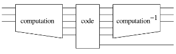

| Safe Haskell | None |
|---|
Quipper.Internal.Generic
Contents
Description
This module provides functions and operators that are "generic"
on quantum data. We say that a function is generic if it works at
any quantum data type, rather than just a specific type such as
Qubit. For example, the generic function qinit can be used to
initialize a qubit from a boolean, or a pair of qubits from a pair
of booleans, or a list of qubits from a list of booleans, and so
forth.
Some functions are also generic in the number of arguments they take, in addition to the type of the arguments.
Synopsis
- qinit :: QShape ba qa ca => ba -> Circ qa
- qterm :: QShape ba qa ca => ba -> qa -> Circ ()
- qdiscard :: QData qa => qa -> Circ ()
- cinit :: QShape ba qa ca => ba -> Circ ca
- cterm :: QShape ba qa ca => ba -> ca -> Circ ()
- cdiscard :: CData ca => ca -> Circ ()
- qc_init :: QCData qc => BType qc -> Circ qc
- qc_init_with_shape :: QCData qc => qc -> BType qc -> Circ qc
- qc_term :: QCData qc => BType qc -> qc -> Circ ()
- qc_discard :: QCData qc => qc -> Circ ()
- measure :: QShape ba qa ca => qa -> Circ ca
- prepare :: QShape ba qa ca => ca -> Circ qa
- qc_measure :: QCData qc => qc -> Circ (QCType Bit Bit qc)
- qc_prepare :: QCData qc => qc -> Circ (QCType Qubit Qubit qc)
- global_phase_anchored :: QCData qc => Double -> qc -> Circ ()
- map_hadamard :: QData qa => qa -> Circ qa
- map_hadamard_at :: QData qa => qa -> Circ ()
- swap :: QCData qc => qc -> qc -> Circ (qc, qc)
- swap_at :: QCData qc => qc -> qc -> Circ ()
- controlled_not :: QCData qc => qc -> qc -> Circ (qc, qc)
- controlled_not_at :: QCData qc => qc -> qc -> Circ ()
- bool_controlled_not :: QCData qc => qc -> BType qc -> Circ qc
- bool_controlled_not_at :: QCData qc => qc -> BType qc -> Circ ()
- qmultinot :: QData qa => qa -> Circ qa
- qmultinot_at :: QData qa => qa -> Circ ()
- qc_copy_fun :: QCData qc => qc -> Circ (qc, qc)
- qc_uncopy_fun :: QCData qc => qc -> qc -> Circ qc
- qc_copy :: QCData qc => qc -> Circ qc
- qc_uncopy :: QCData qc => qc -> qc -> Circ ()
- cgate_if :: CData ca => Bit -> ca -> ca -> Circ ca
- circ_if :: CData ca => Bit -> Circ ca -> Circ ca -> Circ ca
- named_gate :: QData qa => String -> qa -> Circ qa
- named_gate_at :: QData qa => String -> qa -> Circ ()
- named_rotation :: QData qa => String -> Timestep -> qa -> Circ qa
- named_rotation_at :: QData qa => String -> Timestep -> qa -> Circ ()
- extended_named_gate :: (QData qa, QData qb) => String -> qa -> qb -> Circ qa
- extended_named_gate_at :: (QData qa, QData qb) => String -> qa -> qb -> Circ ()
- dynamic_lift :: QShape ba qa ca => ca -> Circ ba
- mapUnary :: QData qa => (Qubit -> Circ Qubit) -> qa -> Circ qa
- mapBinary :: QData qa => (Qubit -> Qubit -> Circ (Qubit, Qubit)) -> qa -> qa -> Circ (qa, qa)
- mapBinary_c :: QShape ba qa ca => (Qubit -> Bit -> Circ (Qubit, Bit)) -> qa -> ca -> Circ (qa, ca)
- map2Q :: QData qa => ((Qubit, Qubit) -> Circ Qubit) -> (qa, qa) -> Circ qa
- qc_mapBinary :: QCData qc => (Qubit -> Qubit -> Circ (Qubit, Qubit)) -> (Bit -> Bit -> Circ (Bit, Bit)) -> qc -> qc -> Circ (qc, qc)
- qubits_of_qdata :: QData qa => qa -> [Qubit]
- qdata_of_qubits :: QData qa => qa -> [Qubit] -> qa
- endpoints_of_qcdata :: QCData qc => qc -> [Endpoint]
- qcdata_of_endpoints :: QCData qc => qc -> [Endpoint] -> qc
- qc_false :: QCData qc => qc -> BType qc
- qshape :: QData qa => BType qa -> qa
- qc_bind :: QCData qc => qc -> QCType a b qc -> Bindings a b
- qc_unbind :: QCData qc => Bindings a b -> qc -> QCType a b qc
- (.&&.) :: (ControlSource a, ControlSource b) => a -> b -> ControlList
- (.==.) :: QCData qc => qc -> BType qc -> ControlList
- (./=.) :: QCLeaf q => q -> Bool -> ControlList
- encapsulate_generic :: QCData x => ErrMsg -> (x -> Circ y) -> x -> (x, BCircuit, y)
- encapsulate_generic_in_namespace :: QCData x => ErrMsg -> (x -> Circ y) -> x -> Circ (x, BCircuit, y)
- unencapsulate_generic :: (QCData x, QCData y) => (x, BCircuit, y) -> x -> Circ y
- encapsulate_dynamic :: QCData x => (x -> Circ y) -> x -> (x, DBCircuit y)
- unencapsulate_dynamic :: (QCData x, QCData y) => (x, DBCircuit y) -> x -> Circ y
- reverse_generic :: (QCData x, QCData y, TupleOrUnary xt x, QCurry x_y x y, Curry x_y_xt x (y -> Circ xt)) => x_y -> x_y_xt
- reverse_generic_curried :: (QCData x, QCData y, TupleOrUnary xt x, Tuple yt y, QCurry x_yt x yt, QCurry y_xt y xt, Curry x_y_xt x y_xt) => x_yt -> x_y_xt
- reverse_simple :: (QCData_Simple x, QCData y, TupleOrUnary xt x, QCurry x_y x y) => x_y -> y -> Circ xt
- reverse_simple_curried :: (QCData_Simple x, QCData y, TupleOrUnary xt x, Tuple yt y, QCurry x_yt x yt, QCurry y_xt y xt) => x_yt -> y_xt
- reverse_generic_endo :: (QCData x, TupleOrUnary xt x, QCurry x_xt x xt) => x_xt -> x_xt
- reverse_generic_imp :: (QCData x, QCurry x__ x ()) => x__ -> x__
- reverse_endo_if :: (QCData x, TupleOrUnary xt x, QCurry x_xt x xt) => Bool -> x_xt -> x_xt
- reverse_imp_if :: (QCData qa, QCurry fun qa ()) => Bool -> fun -> fun
- class QCurry fun args res | fun -> args res, args res -> fun where
- transform_unary_dynamic_shape :: (QCData x, QCData y, x' ~ QCType a b x, y' ~ QCType a b y, Monad m) => DynamicTransformer m a b -> (x -> Circ y) -> x -> x' -> m y'
- transform_unary_dynamic :: (QCData x, QCData y) => DynamicTransformer Circ Qubit Bit -> (x -> Circ y) -> x -> Circ y
- transform_unary :: (QCData x, QCData y) => Transformer Circ Qubit Bit -> (x -> Circ y) -> x -> Circ y
- transform_generic :: (QCData x, QCData y, QCurry qfun x y) => Transformer Circ Qubit Bit -> qfun -> qfun
- transform_unary_shape :: (QCData x, QCData y, x' ~ QCType a b x, y' ~ QCType a b y, Monad m) => Transformer m a b -> (x -> Circ y) -> x -> x' -> m y'
- transform_generic_shape :: (QCData x, QCData y, QCurry qfun x y, Curry qfun' x' (m y'), Curry qfun'' x qfun', x' ~ QCType a b x, y' ~ QCType a b y, Monad m) => Transformer m a b -> qfun -> qfun''
- with_ancilla_init :: QShape a qa ca => a -> (qa -> Circ b) -> Circ b
- with_ancilla_list :: Int -> (Qulist -> Circ a) -> Circ a
- with_computed_fun :: (QCData x, QCData y) => x -> (x -> Circ y) -> (y -> Circ (y, b)) -> Circ (x, b)
- with_computed :: QCData x => Circ x -> (x -> Circ b) -> Circ b
- with_basis_change :: Circ () -> Circ b -> Circ b
- with_classical_control :: QCData qa => Bit -> String -> qa -> (qa -> Circ qa) -> Circ qa
- provide_subroutine_generic :: (QCData x, QCData y) => ErrMsg -> BoxId -> Bool -> (x -> Circ y) -> x -> Circ ()
- box :: (QCData qa, QCData qb, QCurry qa_qb qa qb) => String -> qa_qb -> qa_qb
- nbox :: QCData qa => String -> Integer -> (qa -> Circ qa) -> qa -> Circ qa
- box_loopM :: (Integral int, QCData qa) => String -> int -> qa -> (qa -> Circ qa) -> Circ qa
- loopM_boxed_if :: (Integral int, QCData qa) => Bool -> String -> int -> qa -> (qa -> Circ qa) -> Circ qa
- inline_subroutine :: BoxId -> Namespace -> [Endpoint] -> Circ [Endpoint]
Generic gates
Initialization and termination
qinit :: QShape ba qa ca => ba -> Circ qa Source #
Initialize a qubit from a boolean parameter. More generally, initialize a data structure of qubits from a corresponding data structure of boolean parameters. Examples:
q <- qinit False (q0, q1) <- qinit (True, False) [q0, q1, q2] <- qinit [True, False, True]
qterm :: QShape ba qa ca => ba -> qa -> Circ () Source #
Terminate a qubit, asserting its state to equal the boolean parameter. More generally, terminate a data structure of qubits, asserting that their state is as given by a data structure of booleans parameters. Examples:
qterm False q qterm (False, False) (q0, q1) qterm [False, False, False] [q0, q1, q2]
In some cases, it is permissible for some aspect of the parameter's shape to be underspecified, e.g., a longer than necessary list, or an integer of indeterminate length. It is therefore possible, for example, to write:
qterm 17 qa -- when qa :: QDInt, qterm [False..] qa -- when qa :: [Qubit].
The rules for when a boolean argument can be "promoted" in this way are specific to each individual data type.
qdiscard :: QData qa => qa -> Circ () Source #
Discard a qubit, ignoring its state. This can leave the quantum system in a mixed state, so is not a reversible operation. More generally, discard all the qubits in a quantum data structure. Examples:
qdiscard q qdiscard (q0, q1) qdiscard [q0, q1, q2]
cterm :: QShape ba qa ca => ba -> ca -> Circ () Source #
Terminate a Bit, asserting its state to equal the given
Bool. More generally, terminate a data structure of Bits,
asserting that their state is as given by a data structure of
Bools. Examples:
cterm False b cterm (False, False) (b0, b1) cterm [False, False, False] [b0, b1, b2]
In some cases, it is permissible for some aspect of the parameter's shape to be underspecified, e.g., a longer than necessary list, or an integer of indeterminate length. It is therefore possible, for example, to write:
cterm 17 ca -- when ca :: CInt, cterm [False..] ca -- when ca :: [Bit].
The rules for when a boolean argument can be "promoted" in this way are specific to each individual data type.
cdiscard :: CData ca => ca -> Circ () Source #
Discard a Bit, ignoring its state. This can leave the system in
a mixed state, so is not a reversible operation. More generally,
discard all the Bits in a data structure. Examples:
cdiscard b cdiscard (b0, b1) cdiscard [b0, b1, b2]
qc_init :: QCData qc => BType qc -> Circ qc Source #
Heterogeneous version of qinit. Please note that the type of
the result of this function cannot be inferred from the type of the
argument. For example,
x <- qc_init False
is ambiguous, unless it can be inferred from the context whether
x is a Bit or a Qubit. If the type cannot be inferred from
the context, it needs to be stated explicitly, like this:
x <- qc_init False :: Circ Qubit
Alternatively, qc_init_with_shape can be used to fix a specific
type.
qc_init_with_shape :: QCData qc => qc -> BType qc -> Circ qc Source #
A version of qc_init that uses a shape type parameter. The
first argument is the shape type parameter, and the second argument
is a data structure containing boolean initializers. The shape type
argument determines which booleans are used to initialize qubits,
and which ones are used to initialize classical bits.
Example:
(x,y) <- qc_init_with_shape (bit,[qubit]) (True, [False,True])
This will assign to x a classical bit initialized to 1, and to y a list of two qubits initialized to |0〉 and |1〉, respectively.
Measurement and preparation
qc_measure :: QCData qc => qc -> Circ (QCType Bit Bit qc) Source #
Heterogeneous version of measure. Given a heterogeneous data
structure, measure all of its qubits, and leave any classical bits
unchanged.
qc_prepare :: QCData qc => qc -> Circ (QCType Qubit Qubit qc) Source #
Heterogeneous version of prepare. Given a heterogeneous data
structure, prepare qubits from all classical bits, and leave any
qubits unchanged.
Global phase gate
global_phase_anchored :: QCData qc => Double -> qc -> Circ () Source #
Like global_phase, except the gate is also "anchored" at a
qubit, a bit, or more generally at some quantum data. The anchor
is only used as a hint for graphical display. The gate, which is a
zero-qubit gate, will potentially be displayed near the anchor(s).
Mapped gates
map_hadamard :: QData qa => qa -> Circ qa Source #
Apply a Hadamard gate to every qubit in a quantum data structure.
map_hadamard_at :: QData qa => qa -> Circ () Source #
Imperative version of map_hadamard.
swap :: QCData qc => qc -> qc -> Circ (qc, qc) Source #
Apply a swap gate to two qubits. More generally, apply swap gates to every corresponding pair of qubits in two pieces of quantum data.
swap_at :: QCData qc => qc -> qc -> Circ () Source #
Apply a swap gate to two qubits. More generally, apply swap gates to every corresponding pair of qubits in two pieces of quantum data.
controlled_not :: QCData qc => qc -> qc -> Circ (qc, qc) Source #
Apply a controlled-not gate to every corresponding pair of quantum or classical bits in two pieces of QCData. The first argument is the target and the second the (positive) control.
For now, we require both pieces of QCData to have the same type, i.e., classical bits can be controlled only by classical bits and quantum bits can be controlled only by quantum bits.
Example:
((a',b'), (x,y)) <- controlled_not (a,b) (x,y)
is equivalent to
a' <- qnot a `controlled` x b' <- qnot b `controlled` y
controlled_not_at :: QCData qc => qc -> qc -> Circ () Source #
Imperative version of controlled_not. Apply a controlled-not
gate to every corresponding pair of quantum or classical bits in
two pieces of QCData. The first argument is the target and the
second the (positive) control.
bool_controlled_not :: QCData qc => qc -> BType qc -> Circ qc Source #
A version of controlled_not where the control consists of
boolean data. Example:
bool_controlled_not (q, r, s) (True, True, False)
negates q and r, but not s.
bool_controlled_not_at :: QCData qc => qc -> BType qc -> Circ () Source #
A version of controlled_not_at where the control consists of
boolean data. Example:
bool_controlled_not_at (q, r, s) (True, True, False)
negates q and r, but not s.
qmultinot_at :: QData qa => qa -> Circ () Source #
Negate all qubits in a quantum data structure.
Copying and uncopying
qc_copy_fun :: QCData qc => qc -> Circ (qc, qc) Source #
Initialize a new piece of quantum data, as a copy of a given piece. Returns both the original and the copy.
qc_uncopy_fun :: QCData qc => qc -> qc -> Circ qc Source #
Given two pieces of quantum data, assumed equal (w.r.t. the
computational basis), terminate the second piece (and return the
first, unmodified). This is the inverse of qc_copy_fun, in the sense
that the following sequence of instructions behaves like the
identity function:
(orig, copy) <- qc_copy_fun orig orig <- qc_uncopy_fun orig copy
qc_copy :: QCData qc => qc -> Circ qc Source #
Create a fresh copy of a piece of quantum data. Note: copying is
performed via a controlled-not operation, and is not cloning. This
is similar to qc_copy_fun, except it returns only the copy, and not
the original.
qc_uncopy :: QCData qc => qc -> qc -> Circ () Source #
"Uncopy" a piece of quantum data; i.e. terminate copy,
assuming it's a copy of orig. This is the inverse of
qc_copy, in the sense that the following sequence of
instructions behaves like the identity function:
b <- qc_copy a qc_uncopy a b
Classical gates
cgate_if :: CData ca => Bit -> ca -> ca -> Circ ca Source #
If a is True, return a copy of b, else return a copy of
c. Here b and c can be any data structures consisting of
Bits, but b and c must be of the same type and shape (for
example, if they are lists, they must be of equal
length). Examples:
output <- cgate_if a b c (out0, out1) <- cgate_if a (b0, b1) (c0, c1) [out0, out1, out2] <- cgate_if a [b0, b1, b2] [c0, c1, c2]
circ_if :: CData ca => Bit -> Circ ca -> Circ ca -> Circ ca Source #
circ_if is an if-then-else function for classical circuits.
It is a wrapper around cgate_if, intended to be used like this:
result <- circ_if <<<condition>>> ( <<then-part>>> )( <<<else-part>>> )
Unlike cgate_if, this is a meta-operation, i.e., the bodies of
the "then" and "else" parts can be circuit building
operations.
What makes this different from the usual boolean "if-then-else"
is that the condition is of type Bit, i.e., it is only known at
circuit execution time. Therefore the generated circuit contains
both the "then" and "else" parts, suitably
controlled. Precondition: the "then" and "else" parts must be
of the same type and shape.
Named gates
named_gate :: QData qa => String -> qa -> Circ qa Source #
Define a new functional-style gate of the given name. Usage:
my_unary_gate :: Qubit -> Circ Qubit my_unary_gate = named_gate "Q"
my_binary_gate :: (Qubit, Qubit) -> Circ (Qubit, Qubit) my_binary_gate = named_gate "R"
This defines a new unary gate and a new binary gate, which will be rendered as Q and R, respectively, in circuit diagrams.
named_gate_at :: QData qa => String -> qa -> Circ () Source #
Define a new imperative-style gate of the given name. Usage:
my_unary_gate_at :: Qubit -> Circ () my_unary_gate_at = named_gate_at "Q"
my_binary_gate_at :: (Qubit, Qubit) -> Circ () my_binary_gate_at = named_gate_at "R"
This defines a new unary gate and a new binary gate, which will be rendered as Q and R, respectively, in circuit diagrams.
named_rotation :: QData qa => String -> Timestep -> qa -> Circ qa Source #
Define a new functional-style gate of the given name, and parameterized by a real-valued parameter. This is typically used for rotations or phase gates that are parameterized by an angle. The name can contain '%' as a place holder for the parameter. Usage:
my_unary_gate :: Qubit -> Circ Qubit my_unary_gate = named_rotation "exp(-i%Z)" 0.123
my_binary_gate :: TimeStep -> (Qubit, Qubit) -> Circ (Qubit, Qubit) my_binary_gate t = named_rotation "Q(%)" t
named_rotation_at :: QData qa => String -> Timestep -> qa -> Circ () Source #
Define a new imperative-style gate of the given name, and parameterized by a real-valued parameter. This is typically used for rotations or phase gates that are parameterized by an angle. The name can contain '%' as a place holder for the parameter. Usage:
my_unary_gate_at :: Qubit -> Circ () my_unary_gate_at = named_rotation "exp(-i%Z)" 0.123
my_binary_gate_at :: TimeStep -> (Qubit, Qubit) -> Circ () my_binary_gate_at t = named_rotation "Q(%)" t
extended_named_gate :: (QData qa, QData qb) => String -> qa -> qb -> Circ qa Source #
Define a new functional-style gate of the given name. Like
named_gate, except that the generated gate is extended with
"generalized controls". The generalized controls are additional
inputs to the gate that are guaranteed not to be modified if they
are in a computational basis state. They are rendered in a special
way in circuit diagrams. Usage:
my_new_gate :: (Qubit,Qubit) -> Qubit -> Circ (Qubit,Qubit) my_new_gate = extended_named_gate "Q"
This defines a new gate with name Q, two inputs, and one generalized input.
extended_named_gate_at :: (QData qa, QData qb) => String -> qa -> qb -> Circ () Source #
Like extended_named_gate, except defines an imperative style gate.
Usage:
my_new_gate_at :: (Qubit,Qubit) -> Qubit -> Circ () my_new_gate_at = extended_named_gate_at "Q"
This defines a new gate with name Q, two inputs, and one generalized input.
Dynamic lifting
dynamic_lift :: QShape ba qa ca => ca -> Circ ba Source #
Convert a Bit (boolean circuit output) to a Bool (boolean
parameter). More generally, convert a data structure of Bits to a
corresponding data structure of Bools.
For use in algorithms that require the output of a measurement to be used as a circuit-generation parameter. This is the case, for example, for sieving methods, and also for some iterative algorithms.
Note that this is not a gate, but a meta-operation. The input consists of classical circuit endpoints (whose values are known at circuit execution time), and the output is a boolean parameter (whose value is known at circuit generation time).
The use of this operation implies an interleaving between circuit
execution and circuit generation. It is therefore a (physically)
expensive operation and should be used sparingly. Using the
dynamic_lift operation interrupts the batch mode operation of the
quantum device (where circuits are generated ahead of time), and
forces interactive operation (the quantum device must wait for the
next portion of the circuit to be generated). This operation is
especially expensive if the current circuit contains unmeasured
qubits; in this case, the qubits must be preserved while the
quantum device remains on standby.
Also note that this operation is not supported in all contexts. It is an error, for example, to use this operation in a circuit that is going to be reversed, or in the body of a boxed subroutine. Also, not all output devices (such as circuit viewers) support this operation.
Mapping
mapUnary :: QData qa => (Qubit -> Circ Qubit) -> qa -> Circ qa Source #
Map a single qubit gate across every qubit in the data structure.
mapBinary :: QData qa => (Qubit -> Qubit -> Circ (Qubit, Qubit)) -> qa -> qa -> Circ (qa, qa) Source #
Map a binary gate across every corresponding pair of qubits in two quantum data structures of equal shape.
mapBinary_c :: QShape ba qa ca => (Qubit -> Bit -> Circ (Qubit, Bit)) -> qa -> ca -> Circ (qa, ca) Source #
Like mapBinary, except the second data structure is classical.
map2Q :: QData qa => ((Qubit, Qubit) -> Circ Qubit) -> (qa, qa) -> Circ qa Source #
Map a binary qubit circuit to every pair of qubits in the quantum data-type. It is a run-time error if the two structures do not have the same size.
qc_mapBinary :: QCData qc => (Qubit -> Qubit -> Circ (Qubit, Qubit)) -> (Bit -> Bit -> Circ (Bit, Bit)) -> qc -> qc -> Circ (qc, qc) Source #
Heterogeneous version of mapBinary. Map a binary gate f
across every corresponding pair of qubits, and a binary gate g
across every corresponding pair of bits, in two quantum data
structures of equal shape.
Conversion to lists
The functions in this section can be used to convert quantum data structures to and from lists. Do not use them! The conversion is unsafe in the same way pointers to void are unsafe in the C programming language. There is almost always a better and more natural way to accomplish what you need to do.
qubits_of_qdata :: QData qa => qa -> [Qubit] Source #
Return the list of qubits representing the given quantum data. The qubits are ordered in some fixed, but arbitrary way. It is guaranteed that two pieces of qdata of the same given shape will be ordered in the same way. No other property of the order is guaranteed, In particular, the order may change without notice from one version of Quipper to the next.
qdata_of_qubits :: QData qa => qa -> [Qubit] -> qa Source #
Take a specimen piece of quantum data to specify the "shape"
desired (length of lists, etc); then reads the given list of qubits
in as a piece of quantum data of the same shape. The ordering of
the input qubits is the same as qubits_of_qdata produces for the
given shape.
A "length mismatch" error occurs if the list does not have exactly the required length.
endpoints_of_qcdata :: QCData qc => qc -> [Endpoint] Source #
Return the list of endpoints that form the leaves of the given
QCData. The leaves are ordered in some fixed, but arbitrary
way. It is guaranteed that two pieces of data of the same given
shape will be ordered in the same way. No other property of the
order is guaranteed. In particular, the order may change without notice from
one version of Quipper to the next.
qcdata_of_endpoints :: QCData qc => qc -> [Endpoint] -> qc Source #
Take a specimen piece of QCData to specify the "shape"
desired (length of lists, etc); then reads the given list of
endpoints in as a piece of quantum data of the same shape. The
ordering of the input endpoints equals that produced by
endpoints_of_qcdata for the given shape.
A "length mismatch" error occurs if the list does not have
exactly the required length. A "shape mismatch" error occurs if
the list contains a Qubit when a Bit was expected, or vice versa.
Shape related operations
qc_false :: QCData qc => qc -> BType qc Source #
Return a boolean data structure of the given shape, with every
leaf initialized to False.
qshape :: QData qa => BType qa -> qa Source #
Return a quantum data structure of the given boolean shape, with
every leaf initialized to the undefined dummy value qubit.
Bindings
qc_bind :: QCData qc => qc -> QCType a b qc -> Bindings a b Source #
Take two pieces of quantum data of the same shape (the first of which consists of wires of a low-level circuit) and create bindings.
qc_unbind :: QCData qc => Bindings a b -> qc -> QCType a b qc Source #
Apply bindings to a piece of quantum and/or classical data holding low-level wires, to get data of the same shape.
Generic controls
The following functions define a convenient syntax for controls. With this, we can write controls in much the same way as one would write (a restricted class of) boolean expressions. Examples:
q1 .==. 0 .&&. q2 .==. 1 for Qubits q1, q2
q .&&. p means q .==. 1 .&&. p .==. 1
qx .==. 5 for a QDInt qx
q1 .==. 0 .&&. z <= 7 we can combine quantum and classical controls
q ./=. b the negation of q .==. b;
here b is a boolean.[p,q,r,s] a list of positive controls
[(p, True), (q, False), (r, False), (s, True)]
a list of positive and negative controlsAmong these infix operators, (.&&.) binds more weakly than
(.==.), (./=.).
(.&&.) :: (ControlSource a, ControlSource b) => a -> b -> ControlList infixr 3 Source #
This is an infix operator to concatenate two controls, forming their logical conjunction.
(.==.) :: QCData qc => qc -> BType qc -> ControlList infix 4 Source #
(qx .==. x): a control which is true just if quantum data qx is in the specified state x.
Generic encapsulation
An encapsulated circuit is a low-level circuit together with data structures holding the input endpoints and output endpoints. A circuit-generating function, with fully specified parameters, can be turned into an encapsulated circuit; conversely, an encapsulated circuit can be turned into a circuit-generating function. Thus, encapsulation and unencapsulation are the main interface for passing between high- and low-level data structures.
encapsulate_generic :: QCData x => ErrMsg -> (x -> Circ y) -> x -> (x, BCircuit, y) Source #
Extract an encapsulated circuit from a circuit-generating function. This requires a shape parameter.
encapsulate_generic_in_namespace :: QCData x => ErrMsg -> (x -> Circ y) -> x -> Circ (x, BCircuit, y) Source #
As encapsulate_generic, but passes the current namespace
into the circuit-generating function, to save recomputing
shared subroutines
unencapsulate_generic :: (QCData x, QCData y) => (x, BCircuit, y) -> x -> Circ y Source #
Turn an encapsulated circuit back into a circuit-generating function.
A dynamic encapsulated circuit is to an encapsulated circuit like a
DBCircuit to a BCircuit. The output is not a static circuit,
but an interactive computation expressed through the ReadWrite
monad, which can be run on a quantum device to get a static circuit
out.
encapsulate_dynamic :: QCData x => (x -> Circ y) -> x -> (x, DBCircuit y) Source #
Extract an encapsulated dynamic circuit from a circuit-generating function. This requires a shape parameter.
unencapsulate_dynamic :: (QCData x, QCData y) => (x, DBCircuit y) -> x -> Circ y Source #
Turn an encapsulated dynamic circuit back into a circuit-generating function.
This currently fails if the dynamic circuit contains output liftings, because the transformer interface has not yet been updated to work with dynamic circuits.
Generic reversing
reverse_generic :: (QCData x, QCData y, TupleOrUnary xt x, QCurry x_y x y, Curry x_y_xt x (y -> Circ xt)) => x_y -> x_y_xt Source #
Reverse a circuit-generating function. The reversed function requires a shape parameter, given as the input type of the original function.
The type of this highly overloaded function is quite difficult to read. It can have for example the following types:
reverse_generic :: (QCData x, QCData y) => (x -> Circ y) -> x -> (y -> Circ x) reverse_generic :: (QCData x, QCData y, QCData z) => (x -> y -> Circ z) -> x -> y -> (z -> Circ (x,y))
reverse_generic_curried :: (QCData x, QCData y, TupleOrUnary xt x, Tuple yt y, QCurry x_yt x yt, QCurry y_xt y xt, Curry x_y_xt x y_xt) => x_yt -> x_y_xt Source #
Like reverse_generic, but takes functions whose output is a
tuple, and curries the reversed function. Differs from
reverse_generic in an example such as:
f :: (x -> y -> Circ (z,w)) reverse_generic f :: x -> y -> ((z,w) -> Circ (x,y)) reverse_generic_curried f :: x -> y -> (z -> w -> Circ (x,y))
Note: the output must be a n-tuple, where n = 0 or n ≥
2. Applying this to a circuit whose output is a non-tuple type is a
type error; in this case, reverse_generic should be used.
reverse_simple :: (QCData_Simple x, QCData y, TupleOrUnary xt x, QCurry x_y x y) => x_y -> y -> Circ xt Source #
Like reverse_generic, but only works at simple types, and
therefore requires no shape parameters. Typical type instances:
reverse_simple :: (QCData_Simple x, QCData y) => (x -> Circ y) -> (y -> Circ x) reverse_simple :: (QCData_Simple x, QCData_Simple y, QCData z) => (x -> y -> Circ z) -> (z -> Circ (x,y))
reverse_simple_curried :: (QCData_Simple x, QCData y, TupleOrUnary xt x, Tuple yt y, QCurry x_yt x yt, QCurry y_xt y xt) => x_yt -> y_xt Source #
Like reverse_simple, but takes functions whose output is a
tuple, and curries the reversed function. Typical type instance:
reverse_simple_curried :: (QCData_Simple x, QCData y, QCData z) => (x -> Circ (y,z)) -> (y -> z -> Circ x)
Note: the output must be a n-tuple, where n = 0 or n ≥
2. Applying this to a circuit whose output is a non-tuple type is a
type error; in this case, reverse_generic should be used.
reverse_generic_endo :: (QCData x, TupleOrUnary xt x, QCurry x_xt x xt) => x_xt -> x_xt Source #
Like reverse_generic, but specialized to endomorphic circuits,
i.e., circuits where the input and output have the same type (modulo
possibly currying) and shape. In this case, unlike reverse_generic,
no additional shape parameter is required, and the reversed function
is curried if the original function was. Typical type instances:
reverse_generic_endo :: (QCData x) => (x -> Circ x) -> (x -> Circ x) reverse_generic_endo :: (QCData x, QCData y) => (x -> y -> Circ (x,y)) -> (x -> y -> Circ (x,y))
reverse_generic_imp :: (QCData x, QCurry x__ x ()) => x__ -> x__ Source #
Like reverse_generic_endo, but applies to endomorphic circuits
expressed in "imperative" style. Typical type instances:
reverse_generic_endo :: (QCData x) => (x -> Circ ()) -> (x -> Circ ()) reverse_generic_endo :: (QCData x, QCData y) => (x -> y -> Circ ()) -> (x -> y -> Circ ())
reverse_endo_if :: (QCData x, TupleOrUnary xt x, QCurry x_xt x xt) => Bool -> x_xt -> x_xt Source #
Conditional version of reverse_generic_endo. Invert the
endomorphic quantum circuit if the boolean is true; otherwise,
insert the non-inverted circuit.
reverse_imp_if :: (QCData qa, QCurry fun qa ()) => Bool -> fun -> fun Source #
Conditional version of reverse_generic_imp. Invert the
imperative style quantum circuit if the boolean is true; otherwise,
insert the non-inverted circuit.
The QCurry type class
class QCurry fun args res | fun -> args res, args res -> fun where Source #
The QCurry type class is similar to the Curry type class,
except that the result type is guarded by the Circ monad. It
provides a family of type isomorphisms
fun ≅ args -> Circ res,
where
fun = a1 -> a2 -> ... -> an -> Circ res, args = (a1, (a2, (..., (an, ())))).
The benefit of having Circ in the result type is that it ensures
that the result type is not itself a function type, and therefore
fun has a unique arity n. Then args and res are uniquely
determined by fun, which can be used to write higher-order
operators that consume fun of any arity and "do the right
thing".
Generic circuit transformations
transform_unary_dynamic_shape :: (QCData x, QCData y, x' ~ QCType a b x, y' ~ QCType a b y, Monad m) => DynamicTransformer m a b -> (x -> Circ y) -> x -> x' -> m y' Source #
Like transform_unary_shape but for a dynamic transformer
transform_unary_dynamic :: (QCData x, QCData y) => DynamicTransformer Circ Qubit Bit -> (x -> Circ y) -> x -> Circ y Source #
Like transform_unary but for a dynamic transformer
transform_unary :: (QCData x, QCData y) => Transformer Circ Qubit Bit -> (x -> Circ y) -> x -> Circ y Source #
Apply the given transformer to a circuit.
transform_generic :: (QCData x, QCData y, QCurry qfun x y) => Transformer Circ Qubit Bit -> qfun -> qfun Source #
Apply the given transformer to a circuit. Unlike
transform_unary, this function can be applied to a
circuit-generating function in curried form with n arguments, for
any n ≥ 0.
The type of this heavily overloaded function is difficult to read. In more readable form, it has all of the following types:
transform_generic :: (QCData x) => Transformer Circ Qubit Bit -> Circ x -> Circ x transform_generic :: (QCData x, QCData y) => Transformer Circ Qubit Bit -> (x -> Circ y) -> (x -> Circ y) transform_generic :: (QCData x, QCData y, QCData z) => Transformer Circ Qubit Bit -> (x -> y -> Circ z) -> (x -> y -> Circ z)
and so forth.
transform_unary_shape :: (QCData x, QCData y, x' ~ QCType a b x, y' ~ QCType a b y, Monad m) => Transformer m a b -> (x -> Circ y) -> x -> x' -> m y' Source #
Like transform_generic, but applies to arbitrary transformers
of type
Transformer m a b
instead of the special case
Transformer Circ Qubit Bit.
This requires an additional shape argument.
transform_generic_shape :: (QCData x, QCData y, QCurry qfun x y, Curry qfun' x' (m y'), Curry qfun'' x qfun', x' ~ QCType a b x, y' ~ QCType a b y, Monad m) => Transformer m a b -> qfun -> qfun'' Source #
Like transform_generic, but applies to arbitrary transformers
of type
Transformer m a b
instead of the special case
Transformer Circ Qubit Bit.
This requires an additional shape argument.
The type of this heavily overloaded function is difficult to read. In more readable form, it has all of the following types:
transform_generic :: (QCData x) => Transformer m a b -> Circ x -> m (QCData a b x) transform_generic :: (QCData x, QCData y) => Transformer m a b -> (x -> Circ y) -> x -> (QCData a b x -> m (QCData a b y)) transform_generic :: (QCData x, QCData y, QCData z) => Transformer m a b -> (x -> y -> Circ z) -> x -> y -> (QCData a b x -> QCData a b y -> m (QCData a b z))
and so forth.
Generic block structure
with_ancilla_init :: QShape a qa ca => a -> (qa -> Circ b) -> Circ b Source #
Execute a block with local ancillas. Opens a block, initializing an ancilla with a specified classical value, and terminates it with the same value when the block closes. Note: it is the programmer's responsibility to return the ancilla to its original state at the end of the enclosed block. Usage:
with_ancilla_init True $ \a -> do {
<<<code block using ancilla a initialized to True>>>
}with_ancilla_init [True,False,True] $ \a -> do {
<<<code block using list of ancillas a initialized to [True,False,True]>>>
}with_ancilla_list :: Int -> (Qulist -> Circ a) -> Circ a Source #
Like with_ancilla, but creates a list of n ancillas, all
initialized to |0〉. Usage:
with_ancilla_list n $ \a -> do {
<<<code block using list of ancillas a>>>
}with_computed_fun :: (QCData x, QCData y) => x -> (x -> Circ y) -> (y -> Circ (y, b)) -> Circ (x, b) Source #
with_computed_fun x f g
Important subtlety in usage: all quantum data referenced in f, even as controls, must be explicitly bound and returned by f, or the reversing may rebind it incorrectly. g, on the other hand, can safely refer to anything that is in scope outside the with_computed_fun.
with_computed :: QCData x => Circ x -> (x -> Circ b) -> Circ b Source #
with_computed computation code

Both computation and code may refer to any qubits that exist in the current environment, and they may also create new qubits. computation may produce arbitrary garbage in addition to its output.
This is a very general but relatively unsafe operation. It is the user's responsibility to ensure that the computation can indeed be undone. In particular, if computation contains any initializations, then code must ensure that the corresponding assertions will be satisfied in computation−1.
Related more specialized, but potentially safer, operations are:
with_basis_change, which is likewith_computed, but assumes that computation is unitary, andclassical_to_reversible, which assumes that computation is classical (or pseudo-classical), and code is a simple copy-by-controlled-not operation.
with_basis_change :: Circ () -> Circ b -> Circ b Source #
with_basis_change basischange code
with_basis_change basischange $ do
<<<code>>>
where
basischange = do
<<<gates>>>with_classical_control :: QCData qa => Bit -> String -> qa -> (qa -> Circ qa) -> Circ qa Source #
Classical control on a function with same shape of input and output: if the control bit is true the function is fired, otherwise the identity map is used. Note: the constraint on the types is dynamically checked.
Boxed subcircuits
provide_subroutine_generic :: (QCData x, QCData y) => ErrMsg -> BoxId -> Bool -> (x -> Circ y) -> x -> Circ () Source #
Bind a name to a function as a subroutine in the current namespace. This requires a shape argument, as well as complete parameters, so that it is uniquely determined which actual circuit will be the subroutine. It is an error to call that subroutine later with a different shape argument. It is therefore the user's responsibility to ensure that the name is unique to the subroutine, parameters, and shape.
This function does nothing if the name already exists in the namespace; in particular, it does not check whether the given function is equal to the stored subroutine.
box :: (QCData qa, QCData qb, QCurry qa_qb qa qb) => String -> qa_qb -> qa_qb Source #
A generic interface for wrapping a circuit-generating function into a boxed and named subroutine. This takes a name and a circuit-generating function, and returns a new circuit-generating function of the same type, but which inserts a boxed subroutine instead of the actual body of the subroutine.
It is intended to be used like this:
somefunc :: Qubit -> Circ Qubit somefunc a = do ... somefunc_boxed :: Qubit -> Circ Qubit somefunc_boxed = box "somefunc" somefunc
Here, the type of somefunc is just an example; this could indeed
be a function with any number and type of arguments, as long as the
arguments and return type are quantum data.
It is also possible to inline the box operator directly, in which
case it should be done like this:
somefunc :: Qubit -> Circ Qubit somefunc = box "somefunc" $ \a -> do ...
Note: The box operator wraps around a complete function,
including all of its arguments. It would be incorrect to apply the
box operator after some quantum variables have already been
defined. Thus, the following is incorrect:
incorrect_somefunc :: Qubit -> Circ Qubit incorrect_somefunc a = box "somefunc" $ do ...
It is the user's responsibility not to use the same name for
different subroutines. If box is called more than once with the
same name and shape of input, Quipper assumes, without checking,
that they are subsequent calls to the same subroutine.
The type of the box operator is overloaded and quite difficult to
read. It can have for example the following types:
box :: String -> (Qubit -> Circ Qubit) -> (Qubit -> Circ Qubit) box :: String -> (QDInt -> QDInt -> Circ (QDInt,QDInt,QDInt)) -> (QDInt -> QDInt -> Circ (QDInt,QDInt,QDInt))
nbox :: QCData qa => String -> Integer -> (qa -> Circ qa) -> qa -> Circ qa Source #
A version of box with iteration. The second argument is an
iteration count.
This can only be applied to functions of a single argument, where the input and output types are the same.
box_loopM :: (Integral int, QCData qa) => String -> int -> qa -> (qa -> Circ qa) -> Circ qa Source #
loopM_boxed_if :: (Integral int, QCData qa) => Bool -> String -> int -> qa -> (qa -> Circ qa) -> Circ qa Source #
A version of loopM that will be boxed conditionally on a
boolean condition. Typical usage:
loopM_boxed_if (s > 1) "name" s x $ \x -> do <<<body>>> return x
inline_subroutine :: BoxId -> Namespace -> [Endpoint] -> Circ [Endpoint] Source #
Like call_subroutine, except inline the subroutine body from
the given namespace, instead of inserting a subroutine call.
Implementation note: this currently copies all subroutine definitions from the given namespace into the current namespace, and not just the ones used by the current subroutine.
Implementation note: this currently only works on lists of endpoints.